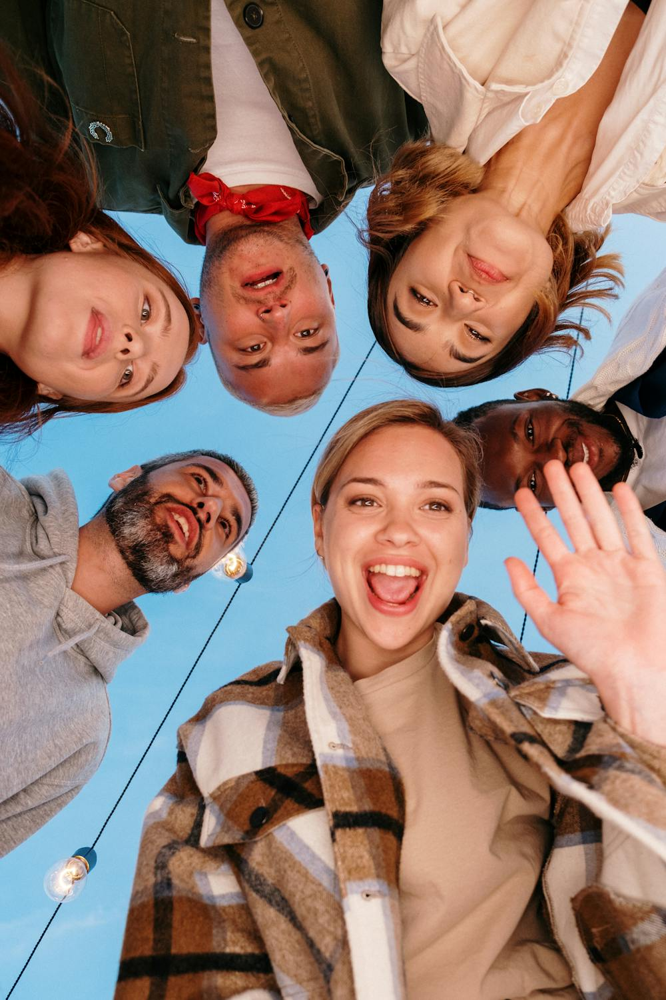

The idea behind LoveConnect
Good connections start with common ground.
LoveConnect explores how shared interests can bring people together. A love of music, a favourite walking route or a good book can be all it takes to start a conversation.
The idea is to make getting to know someone feel thoughtful, relaxed and natural.

A simple beginning
-
Say a little about yourself
Try the introduction form and choose interests you enjoy.
-
Find common ground
Browse the fictional community and discover what you might share.
-
Imagine your first hello
A favourite song or a weekend hobby can be a simple conversation starter.
LoveConnect is a fictional portfolio concept. Profiles and stories are illustrative. The demo form does not send or save information.